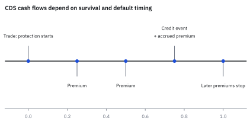
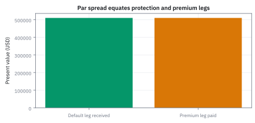
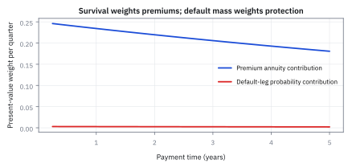

20.7 Credit Default Swaps (CDS)
ผู้ซื้อ CDS จ่ายเบี้ยทุกไตรมาสตราบที่ผู้ออกหนี้ยังรอด แลกกับเงินชดเชยส่วนที่หายเมื่อเจ๊ง par spread คืออัตราเบี้ยที่ทำให้สองขามีค่าเท่ากัน ตั้งด้วยโอกาสรอดชุดเดียวกับ 20.6
ลูกค้าถือ CDS อายุ 5 ปี บนหนี้ \$10,000,000 ในฝั่งผู้ซื้อความคุ้มครอง จ่ายเบี้ย 125 bp ต่อปีทุกไตรมาส วันนี้อัตราไร้ความเสี่ยง 4.5% hazard ของผู้ออกหนี้ 2.0% ต่อปี และ recovery 40% (ตัวเลขสมมติ) ตลาดตั้งเบี้ยยุติธรรมได้ราว 120 bp เพื่อนบอกว่าลูกค้าจ่ายเกินปีละ 5 bp ห้าปี สัญญาจึงติดลบ $0.0005(5)(10^7)=\$25{,}000$ ถูกไหม?
ลองตอบก่อนเปิดเฉลย
ไม่ถูก par spread คือ 119.99975 bp และสัญญามีค่า −\$21,225.22 สำหรับผู้ซื้อ ไม่ใช่ −\$25,000 เบี้ยจ่ายเฉพาะเมื่อผู้ออกหนี้ยังรอด และเงินปีหลังต้องคิดลด ส่วนต่างต่อปีจึงคูณด้วย risky annuity 4.2448 ปี ไม่ใช่ 5 ปี แบบเดียวกับ swap ใน 20.2
สิ่งที่เราจะสร้าง
20.6 ตั้งราคาพันธบัตรเอกชนซึ่งผสมความเสี่ยงอัตราดอกเบี้ยกับความเสี่ยงเครดิตไว้ในราคาเดียว CDS แยกความเสี่ยงเครดิตออกมาซื้อขายตรง ๆ ผู้ซื้อความคุ้มครอง (protection buyer) จ่ายเบี้ยเป็นงวด ผู้ขาย (protection seller) จ่ายส่วนที่หายเมื่อผู้ออกหนี้เจ๊ง โครงสร้างเหมือน swap ของ 20.2: สองขา ตั้งอัตราให้มูลค่าเริ่มต้นเป็นศูนย์
ลำดับคือ เงินไหลจริงของ CDS หนึ่งเส้นทางด้วยมือ ตารางโอกาสรอดและโอกาสเจ๊งรายไตรมาส ขาเบี้ยพร้อมเบี้ยค้าง ขาชดเชย par spread และสูตรประมาณ ตัวเลขของ CDS 5 ปี มูลค่าสัญญาที่เบี้ยไม่เท่า par ความไวต่อ hazard และความเสี่ยงตอนเจ๊ง แล้วปิดด้วย CDS 2 ปีในไฟล์ของคอร์ส
ศัพท์ที่ใช้ในหัวข้อนี้
- Credit default swap (CDS)
- สัญญาที่ผู้ซื้อจ่ายเบี้ยเป็นงวดเพื่อรับเงินชดเชยเมื่อผู้ออกหนี้อ้างอิง (reference entity) เกิด credit event เช่นไม่จ่ายหนี้หรือล้มละลาย ใช้ป้องกันหรือรับความเสี่ยงเครดิตโดยไม่ต้องซื้อขายตัวหนี้
- Premium leg และ default leg
- premium leg คือมูลค่าวันนี้ของเบี้ยที่ผู้ซื้อจ่ายตราบที่ยังรอด รวมเบี้ยค้างของงวดที่เจ๊ง default leg คือมูลค่าวันนี้ของเงินชดเชย $(1-R)N$ ที่ผู้ขายจ่ายเมื่อเจ๊ง
- Par spread
- อัตราเบี้ยต่อปีที่ทำให้สองขามีค่าเท่ากัน สัญญาใหม่ที่อัตรานี้ไม่ต้องจ่ายเงินก้อนใดตอนเริ่ม เป็นตัวเลขที่ตลาดใช้พูดถึงความเสี่ยงเครดิตของบริษัท
- Risky annuity
- มูลค่าวันนี้ของการจ่าย 1 ต่อปีทุกงวดตราบที่ยังไม่เจ๊ง (รวมเบี้ยค้าง) มีหน่วยเป็นปี ใช้แปลงส่วนต่างของอัตราเบี้ยเป็นเงิน แบบ annuity ของ 20.2
- Upfront และ standard coupon
- ตั้งแต่ปี 2009 ตลาดใช้อัตราเบี้ยมาตรฐานไม่กี่ค่า แล้วชดเชยส่วนต่างกับ par spread ด้วยเงินก้อนวันเริ่มสัญญา (upfront)
- Jump-to-default
- มูลค่าที่เปลี่ยนทันทีเมื่อเจ๊ง ซึ่งใหญ่กว่าความไวต่อ spread หนึ่ง bp หลายพันเท่า ต้องรายงานแยกจาก credit01
สัญลักษณ์และหน่วย
| สัญลักษณ์ | ความหมาย | หน่วย |
|---|---|---|
| $N,\ R$ | notional และ recovery (สัดส่วนของ notional) | \$, ไม่มีหน่วย |
| $\delta,\ T_i=i\delta,\ n$ | ความยาวงวด วันจ่ายงวดที่ $i$ และจำนวนงวด | ปี, ปี, จำนวนเต็ม |
| $D_i,\ Q_i$ | discount factor และโอกาสรอดถึง $T_i$ | ไม่มีหน่วย |
| $\Delta Q_i$ | โอกาสเจ๊งในงวดที่ $i$ $=Q_{i-1}-Q_i$ | ไม่มีหน่วย |
| $s,\ s^*$ | อัตราเบี้ยของสัญญา และ par spread | ต่อปี |
| $A$ | risky annuity | ปี |
| $V_{\rm buy}$ | มูลค่าสัญญาสำหรับผู้ซื้อความคุ้มครอง | \$ |
ขั้นที่ 1 — เงินไหลจริงของหนึ่งเส้นทาง: เจ๊งในเดือนที่ 16
เริ่มจากเงินที่ไหลจริงก่อนคิดค่าเฉลี่ยใด ๆ CDS 2 ปี notional \$1,000,000 เบี้ย 160 bp ต่อปีจ่ายทุกไตรมาส recovery 45% สมมติว่าผู้ออกหนี้เจ๊งในเดือนที่ 16 สัญญาจบที่วันจ่ายถัดไป (เดือนที่ 18) ผู้ซื้อจ่ายเบี้ยค้างของช่วงที่ได้รับความคุ้มครองแล้วแต่ยังไม่ได้จ่าย คือตั้งแต่วันจ่ายล่าสุด $t_{k-1}$ ถึงวันเจ๊ง $\tau$
ผู้ซื้อจ่ายเบี้ย \$4,000 ในเดือนที่ 3, 6, 9, 12 และ 15 เจ๊งในเดือนที่ 16 จึงค้างเบี้ยหนึ่งเดือน (เดือน 15 ถึง 16) จ่ายในเดือนที่ 18 พร้อมรับเงินชดเชย \$550,000 ช่วงค้างคือ $\tau-t_{k-1}$ ไม่ใช่ $t_k-\tau$ ซึ่งจะเป็นสองเดือนที่ยังไม่ได้รับความคุ้มครอง
นี่คือเงินของเส้นทางเดียว ยังไม่คิดลดและไม่ถ่วงโอกาส ผลออกมาสุดขั้ว: จ่าย \$21,333.33 ได้ \$550,000 ราคาที่ยุติธรรมมาจากการเฉลี่ยทุกเส้นทางด้วยโอกาสรอดและโอกาสเจ๊ง ซึ่งคือขั้นถัดไป
Figure 20.7a — เบี้ยหยุดเมื่อเจ๊ง เงินชดเชยเริ่มเมื่อเจ๊ง

เส้นเวลาสมมติ (แกนนอนไม่มีหน่วยจริง จุดที่ 0, 0.25, 0.5, 0.75 และ 1.0): เริ่มสัญญา จ่ายเบี้ยสองงวด เกิด credit event พร้อมเบี้ยค้างถึงวันเจ๊ง แล้วเบี้ยงวดหลังหยุด ภาพไม่ได้วาดเงินชดเชย $(1-R)N$ ซึ่งจ่ายที่วันเจ๊ง (หรือวันจ่ายถัดไปในตัวอย่างของขั้นที่ 1)
ขั้นที่ 2 — โอกาสรอดและโอกาสเจ๊งรายไตรมาส
ตั้งแต่ขั้นนี้ใช้ CDS 5 ปีของโจทย์เปิดหน้า: $N=\$10$ ล้าน $\delta=0.25$ $n=20$ $r=4.5\%$ $\lambda=2\%$ $R=40\%$ ต้องใช้สองตัวเลขต่องวด ตัวแรกจาก 20.6 คือโอกาสรอดถึงวันจ่าย ตัวที่สองคือโอกาสเจ๊งภายในงวดนั้นพอดี สองตัวนี้ใช้คนละที่ และการสลับกันคือบั๊กที่พบบ่อยที่สุดในโค้ด CDS
$Q_i$ ถ่วงเงินที่จ่ายเมื่อยังรอด (เบี้ย) $\Delta Q_i$ ถ่วงเงินที่จ่ายเมื่อเจ๊ง (เงินชดเชย และเบี้ยค้าง) ไตรมาสแรกมีโอกาสเจ๊ง 0.004988 ไม่ใช่ 0.995012 เลขชี้กำลังมาจากหนึ่งไตรมาส: $0.02(0.25)=0.005$ และ $0.045(0.25)=0.01125$
ขั้นที่ 3 — ขาเบี้ย: เบี้ยตามกำหนดบวกเบี้ยค้าง ยุบเป็นค่าเฉลี่ยแบบสี่เหลี่ยมคางหมู
เบี้ยงวดที่ $i$ คือ $\delta sN$ จ่ายเมื่อรอดถึง $T_i$ ถ้าเจ๊งกลางงวด ผู้ซื้อจ่ายเบี้ยค้าง สมมติว่าวันเจ๊งกระจายเท่ากันในงวด จึงค้างเฉลี่ยครึ่งงวด $\delta/2$ แล้วดึงตัวร่วมออก
ในวงเล็บ $2Q_i+Q_{i-1}-Q_i=Q_{i-1}+Q_i$ เบี้ยจึงถ่วงด้วยค่าเฉลี่ยของโอกาสรอดต้นงวดกับปลายงวด (สี่เหลี่ยมคางหมู) $A$ คือ risky annuity มีหน่วยเป็นปีและไม่ขึ้นกับ $s$ เหมือน annuity ของ 20.2 ที่เพิ่มโอกาสรอดเข้าไป
ขั้นที่ 4 — ขาชดเชย และ par spread
เงินชดเชย $(1-R)N$ จ่ายเมื่อเจ๊ง ในตัวอย่างนี้จ่ายที่ปลายงวดที่เจ๊ง จึงถ่วงด้วย $\Delta Q_i$ คิดลดด้วย $D_i$ บวกทุกงวดได้เพราะเจ๊งได้ครั้งเดียว สัญญาใหม่ต้องมีค่าศูนย์ จึงตั้งสองขาเท่ากันแล้วตัด $N$ แบบ swap rate ของ 20.2
แถวที่สามให้ $h$ คือโอกาสเจ๊งต่องวดคงที่ แล้ว $Q_i=(1-h)Q_{i-1}$ ทำให้ $Q_{i-1}+Q_i=(2-h)Q_{i-1}$ ผลบวก $\sum D_iQ_{i-1}$ อยู่ทั้งเศษและส่วนจึงตัดกันหมด เหลือแถวสุดท้าย
ตัวเลขของเรา $h=1-e^{-0.005}=0.004988$ ได้ $0.6(0.004988)/[0.25(0.997506)]=1.2000\%$ ซึ่งเกือบเท่า $\lambda(1-R)=0.02(0.6)=120$ bp พอดี สูตรลัดของ 20.6 จึงใช้ได้กับ CDS ตัวหาร $1-h/2$ ชดเชยเบี้ยที่จ่ายไม่เต็มงวดเมื่อเจ๊ง
ขั้นที่ 5 — ตัวเลขของ CDS 5 ปี: annuity, ขาชดเชย และ par spread
โจทย์ให้อะไรมาบ้าง: เมื่อ $r$ และ $\lambda$ คงที่ $D_iQ_i=a^i$ โดย $a=e^{-(0.045+0.02)(0.25)}=e^{-0.01625}$ และ $D_i\Delta Q_i=(e^{0.005}-1)a^i$ ผลบวก 20 งวดจึงเป็นอนุกรมเรขาคณิต
คำตอบ: ขาชดเชยมีค่า \$509,378.76 และที่ par spread 119.99975 bp ขาเบี้ยมีค่าเท่ากันพอดี สัญญาใหม่จึงไม่ต้องจ่ายเงินก้อนตอนเริ่ม ทั้งที่แต่ละขามีค่าเกินครึ่งล้านดอลลาร์ annuity 4.2448 ปีแยกเป็นเบี้ยตามกำหนด 4.2342 ปีกับเบี้ยค้าง 0.0106 ปี
ตรวจเองใน 10 วินาที: $0.6(0.0849)/4.245=0.0120$ เท่ากับ $0.6(0.02)$ ของสูตรลัด และ annuity ต้องต่ำกว่า 5 ปี เพราะเบี้ยถูกคิดลดและหยุดเมื่อเจ๊ง
Figure 20.7b — ที่ par spread สองขามีค่าเท่ากัน

แท่งซ้ายคือขาชดเชยที่ผู้ซื้อได้ แท่งขวาคือขาเบี้ยที่ผู้ซื้อจ่ายที่ 119.99975 bp ทั้งสองคือ \$509,378.76 แกนตั้งเป็นดอลลาร์ ภาพนี้ไม่ได้บอกว่าเงินมาเมื่อไร ขาเบี้ยกระจายทุกไตรมาส ขาชดเชยมาครั้งเดียวถ้าเจ๊ง
Figure 20.7c — น้ำหนักของสองขาในแต่ละไตรมาส

แกนนอนคือวันจ่าย 0.25 ถึง 5 ปี (20 จุด) เส้นน้ำเงินคือ $0.25D_iQ_i$ (น้ำหนักของเบี้ยตามกำหนด) จาก 0.2460 ลดเหลือ 0.1806 เส้นแดงคือ $0.6D_i\Delta Q_i$ (น้ำหนักของขาชดเชยต่อ notional) จาก 0.00296 ลดเหลือ 0.00217 สองเส้นอยู่คนละขนาด เส้นแดงจึงดูเกือบติดแกน เก็บสองชุดนี้แยกกันในโค้ดช่วยจับบั๊กที่ใช้ $Q_i$ แทน $\Delta Q_i$
Figure 20.7d — par spread เกือบเป็น hazard × loss ตาม recovery

แกนนอนคือ hazard 0.2% ถึง 6% (100 จุด) แกนตั้งคือ par spread ห้าปีเป็น bp ตามสูตรของขั้นที่ 4 ที่ hazard 2% ได้ 160.00, 120.00 และ 80.00 bp สำหรับ recovery 20%, 40% และ 60% ที่ 6% ได้ 479.99, 359.99 และ 240.00 bp เส้นเกือบตรงเพราะภายใต้กติกานี้ $s^*\approx\lambda(1-R)$ แต่เป็นผลของกติกา (จ่ายชดเชยปลายงวดและเบี้ยค้างครึ่งงวด) ไม่ใช่เอกลักษณ์ที่จริงทุกกรณี
ขั้นที่ 6 — สัญญาที่เบี้ย 125 bp มีค่าเท่าไร และ upfront
สัญญาของลูกค้าจ่ายเบี้ย 125 bp แต่ par วันนี้คือ 119.99975 bp มูลค่าสำหรับผู้ซื้อคือขาชดเชยลบขาเบี้ยที่อัตราของสัญญา ซึ่งเท่ากับส่วนต่างของอัตราคูณ risky annuity
ผู้ซื้อจ่ายเบี้ยสูงกว่าอัตรายุติธรรมราว 5 bp สัญญาจึงติดลบ \$21,225.22 ถ้าจะเปิดสัญญานี้ใหม่วันนี้ ผู้ขายต้องจ่าย upfront ให้ผู้ซื้อเท่านี้ คำตอบ \$25,000 ของโจทย์เปิดหน้าคูณด้วย 5 ปีแทน 4.2448 ปี
ตั้งแต่ ISDA ปรับกติกาในปี 2009 CDS ในสหรัฐฯ ซื้อขายที่เบี้ยมาตรฐาน 100 bp หรือ 500 bp และครบกำหนดตรงวันมาตรฐาน 20 มีนาคม มิถุนายน กันยายน และธันวาคม ส่วนต่างกับ par spread ชำระเป็น upfront ด้วยสูตรเดียวกับแถวสุดท้าย
Figure 20.7e — ผู้ซื้อความคุ้มครองได้เมื่อ spread กว้างขึ้น

แกนนอนคือ par spread ตลาด 70 ถึง 200 bp (131 จุด) แกนตั้งคือ $N A(s_{\rm mkt}-125)$ เป็นพันดอลลาร์ ตรึง $A=4.2448$: −233.5 ที่ 70 bp ศูนย์ที่ 125 bp และ +318.4 ที่ 200 bp เส้นตรงพอดีเพราะตรึง annuity ไว้ ของจริงเมื่อ spread กว้างขึ้น hazard สูงขึ้นและ annuity ลดลง เส้นจึงโค้งเล็กน้อย ความชันคือ \$4,245 ต่อ bp
ขั้นที่ 7 — credit01 และความเสี่ยงตอนเจ๊ง
ขยับ hazard 1 bp (2.00% เป็น 2.01%) คิดทั้งสองขาใหม่ แล้วเทียบกับสิ่งที่เกิดถ้าผู้ออกหนี้เจ๊งวันนี้: ผู้ซื้อได้ $(1-R)N$ ทันที และสัญญาซึ่งมีค่า $V_{\rm buy}$ หายไป
hazard ขึ้น 1 bp ผู้ซื้อได้ \$2,551.30 แต่ถ้าเจ๊งจริงผู้ซื้อได้ราว \$6.02 ล้าน มากกว่า 2,360 เท่า ความเสี่ยงของ CDS จึงรายงานด้วยตัวเลขเดียวไม่ได้ ต้องมีทั้งความไวต่อ spread, jump-to-default, ความไวต่อ recovery และความเสี่ยงของคู่สัญญา ผู้ขายความคุ้มครองอยู่ฝั่งตรงข้ามทุกตัว
ขั้นที่ 8 — CDS 2 ปีในไฟล์ Excel ของคอร์ส
โจทย์ให้อะไรมาบ้าง: ไฟล์เดียวกับ 20.6 ใช้ hazard ต่อครึ่งปีจาก Solver หารสองเป็นต่อไตรมาส: ปีแรก $0.0201406/2=0.0100703$ ปีที่สอง $0.0194431/2=0.0097216$ อัตรา 1% ทบรายไตรมาส $D_k=(1+0.01/4)^{-k}$ recovery 45% notional \$1,000,000 เบี้ยค้างครึ่งงวด
คำตอบ: เบี้ยตามกำหนด \$41,396.31 เบี้ยค้าง \$206.97 (เล็กเพราะโอกาสเจ๊งต่อไตรมาสราว 1% และค้างครึ่งไตรมาส) และขาชดเชย \$41,603.28 เท่ากันพอดีที่ 218.8895 bp ซึ่งคือค่าที่ไฟล์เก็บไว้ในช่อง Spread สูตรประมาณของขั้นที่ 4 ด้วย hazard ปีแรกได้ 222.67 bp ปีที่สองได้ 214.92 bp ค่าจริงอยู่ระหว่างกลาง
ตรวจเองใน 10 วินาที: $0.55(4)(1.007\%)=2.22\%$ ใกล้ 218.89 bp เพราะ spread ต่อปีคือ loss given default คูณ hazard ต่อปีโดยประมาณ
คำถามที่ควรถามออกมาดัง ๆ
CDS คือประกันใช่ไหม? ใช้ป้องกันได้เหมือนประกัน แต่ต่างกันมาก ประกันต้องมีส่วนได้เสียในสิ่งที่เอาประกัน CDS ซื้อได้แม้ไม่ได้ถือหนี้ (naked CDS) เขียนได้ง่าย และซื้อขายนอกตลาด การใช้งานจึงกลายเป็นการเก็งกำไรอย่างรวดเร็ว: รับความเสี่ยงเครดิตโดยไม่ต้องลงเงินก้อน แสดงมุมมองว่าเครดิตจะแย่ลงง่ายกว่าการชอร์ตหุ้นกู้ และเล่นส่วนต่างกับพันธบัตร
par spread ของ CDS ควรเท่ากับ spread ของพันธบัตรไหม? ประมาณได้ แต่ไม่เท่าพอดี ส่วนต่าง (CDS–bond basis) มาจากต้นทุนการกู้เงินมาซื้อพันธบัตร สภาพคล่อง และรายละเอียดของสัญญา ถ้าไม่ปรับให้กติกาเดียวกันก่อน จะเห็นเงินฟรีที่ไม่มีอยู่จริง
ใครตัดสินว่าเจ๊งแล้ว และ recovery เท่าไร? นิยาม credit event อยู่ในเอกสารมาตรฐานของ ISDA ซึ่งออกครั้งแรกปี 1999 แก้ในปี 2003 และ 2009 ปัจจุบันคณะกรรมการตัดสินว่าเกิดเหตุหรือไม่ และ recovery มาจากการประมูลพันธบัตรของผู้ออก แบบจำลองของหน้านี้สมมติ $R$ ไว้ล่วงหน้า
ความผิดที่ให้คำตอบผิดแบบเงียบ ๆ
คูณส่วนต่างของเบี้ยด้วยจำนวนปี: $0.0005(5)(10^7)=\$25{,}000$ แทน \$21,225.22 ต้องคูณ risky annuity 4.2448 ปี
ใช้โอกาสรอดแทนโอกาสเจ๊งในขาชดเชย: ไตรมาสแรกจะได้น้ำหนัก 0.995 แทน 0.005 ขาชดเชยใหญ่เกินจริงราวสองร้อยเท่า ตรวจได้ทันทีเพราะ par spread จะออกมาเป็นหลายสิบเปอร์เซ็นต์
ลืมเบี้ยค้าง: annuity เหลือ 4.2342 แทน 4.2448 par spread สูงไปเป็น 120.30 bp สำหรับ CDS 5 ปีนี้ ต่างแค่ 0.3 bp แต่สำหรับชื่อที่ hazard สูง ส่วนนี้โตตาม
สลับเครื่องหมายผู้ซื้อกับผู้ขาย: −\$21,225.22 เป็นของผู้ซื้อ ผู้ขายได้ +\$21,225.22 ถ้าสลับ รายงานกำไรขาดทุนผิดไปสองเท่าของค่านี้
นับเบี้ยค้างผิดช่วง: ใช้ $t_k-\tau$ แทน $\tau-t_{k-1}$ ในตัวอย่างขั้นที่ 1 ได้สองเดือน (\$2,666.67) แทนหนึ่งเดือน (\$1,333.33)
ใช้ทำอะไรบนโต๊ะจริง
ธนาคารซื้อความคุ้มครองเพื่อลดความเสี่ยงที่กระจุกกับลูกค้ารายใหญ่โดยไม่ต้องขายเงินกู้ และเพื่อ hedge บริษัทที่ไม่มีหุ้นกู้ซื้อขาย โต๊ะเครดิตแกะ hazard เป็นช่วงอายุจาก par spread ของหลายอายุ (bootstrapping แบบ 20.1 และ 20.6) คิดราคากลับทุก quote แล้วรายงานความไวแยกตามอายุ spread ของ CDS ขยับเร็วกว่าอันดับเครดิตมาก ตลาดจึงใช้มันเป็นเครื่องวัดความเสี่ยงของบริษัทและประเทศ
บทเรียนจากปี 2008: CDS ซื้อขายนอกตลาด ไม่มีใครเห็นฐานะทั้งหมด AIG ใช้อันดับเครดิตสูงของตัวเองขาย CDS ราว \$500 พันล้าน แล้วกลายเป็นผู้ขายความคุ้มครองที่จ่ายไม่ไหวพอดีตอนที่ต้องจ่าย (wrong-way risk) หลังวิกฤต CDS ดัชนีมาตรฐานต้องผ่านสำนักหักบัญชีกลาง และสัญญาที่ซื้อขายกันเองต้องวางหลักประกันมากขึ้น
สามโจทย์ตรวจความเข้าใจ
1. ถ้า recovery ของ CDS 5 ปีเป็น 20% แทน 40% (hazard เดิม 2%) par spread เป็นเท่าไร และทำไม annuity ไม่เปลี่ยน?
เฉลย
$s^*=0.8(0.0848964603)/4.2448318563=0.0159999667$ คือ 160.00 bp annuity ขึ้นกับโอกาสรอดและการคิดลดเท่านั้น ไม่ขึ้นกับ recovery ขาชดเชยโตตาม $1-R$ จาก 0.6 เป็น 0.8 par spread จึงโตเป็น 4/3 เท่า
2. ถ้า par spread ตลาดกว้างขึ้นเป็น 150 bp ทันที (annuity ประมาณเท่าเดิม 4.2448) สัญญา 125 bp มีค่าเท่าไรสำหรับผู้ซื้อ?
เฉลย
$V_{\rm buy}\approx10^7(0.0150-0.0125)(4.2448)=\$106{,}120.80$ ผู้ซื้อจ่ายเบี้ยต่ำกว่าตลาด 25 bp จึงได้กำไร (ของจริงต่ำกว่านี้เล็กน้อย เพราะ hazard ที่สูงขึ้นทำให้ annuity ลดลง)
3. ในตัวอย่างขั้นที่ 1 ถ้าผู้ออกหนี้เจ๊งในเดือนที่ 22 แทน ผู้ซื้อจ่ายและได้เท่าไร?
เฉลย
เบี้ยเจ็ดงวด (เดือน 3 ถึง 21) $7(4{,}000)=28{,}000$ เบี้ยค้างเดือน 21 ถึง 22 คือ \$1,333.33 จ่ายเดือนที่ 24 พร้อมรับ \$550,000 สุทธิ $550{,}000-28{,}000-1{,}333.33=\$520{,}666.67$
คำนวณซ้ำด้วย JavaScript
โค้ดนี้สร้างตารางโอกาสรอด คิดขาเบี้ย (แยกเบี้ยตามกำหนดกับเบี้ยค้าง) ขาชดเชย par spread สูตรประมาณ มูลค่าสัญญา 125 bp credit01 jump-to-default เงินของเส้นทางเดียวในตัวอย่างของคอร์ส และ CDS 2 ปีในไฟล์ Excel แล้วพิมพ์ตัวเลขหลักหนึ่งบรรทัด
const {exp} = Math;
// CDS on a regular grid: survival Q, discount D, premium leg with half-period accrued premium, default leg paid at period end.
function cds({N, R, delta, D, Q, s}) {
if (!(N > 0 && delta > 0)) throw new RangeError('notional and period length must be positive');
if (!(R >= 0 && R < 1)) throw new RangeError('recovery must be in [0, 1)');
if (Q.length !== D.length + 1 || Q[0] !== 1) throw new RangeError('survival must start at 1 and have one more entry than discount factors');
if (Q.some((q, i) => i && q > Q[i - 1])) throw new RangeError('survival cannot increase');
const dQ = D.map((_, i) => Q[i] - Q[i + 1]);
const scheduled = D.reduce((a, d, i) => a + delta * d * Q[i + 1], 0);
const accrued = D.reduce((a, d, i) => a + delta / 2 * d * dQ[i], 0);
const annuity = scheduled + accrued, defaultSum = D.reduce((a, d, i) => a + d * dQ[i], 0);
const defaultLeg = N * (1 - R) * defaultSum, par = (1 - R) * defaultSum / annuity;
const out = {scheduled, accrued, annuity, defaultSum, defaultLeg, par};
if (s !== undefined) { out.premiumLeg = N * s * annuity; out.buyerValue = defaultLeg - out.premiumLeg; }
return out;
}
// Constant rate and hazard (continuous), n periods of length delta.
function flat(r, lambda, delta, n) {
return {D: Array.from({length: n}, (_, i) => exp(-r * (i + 1) * delta)), Q: Array.from({length: n + 1}, (_, i) => exp(-lambda * i * delta))};
}
const base = {N: 1e7, R: 0.4, delta: 0.25};
const five = cds({...base, ...flat(0.045, 0.02, 0.25, 20), s: 0.0125});
const bumped = cds({...base, ...flat(0.045, 0.0201, 0.25, 20), s: 0.0125});
const a = exp(-0.01625), G = a * (1 - a ** 20) / (1 - a);
const h = 1 - exp(-0.005);
// Course example: 2-year CDS, 160 bp, default in month 16, recovery 45%.
const path = {premium: 0.016 * 1e6 / 4, accrued: 0.016 * 1e6 / 12, protection: 0.55 * 1e6};
// Course workbook: half-year hazards from its Solver, divided by two per quarter; rate 1% compounded quarterly.
const hq = [...Array(4).fill(0.02014057304019802 / 2), ...Array(4).fill(0.019443103338662979 / 2)];
const Qx = [1]; hq.forEach(x => Qx.push(Qx[Qx.length - 1] * (1 - x)));
const Dx = Array.from({length: 8}, (_, k) => (1 + 0.01 / 4) ** -(k + 1));
const file = cds({N: 1e6, R: 0.45, delta: 0.25, D: Dx, Q: Qx});
const approx = x => 0.55 * x / (0.25 * (1 - x / 2));
console.log(JSON.stringify({
firstQuarter: {Q1: exp(-0.005), dQ1: 1 - exp(-0.005), D1: exp(-0.01125)},
G, sigmaD: (exp(0.005) - 1) * G, five, approx: {h, par: 0.6 * h / (0.25 * (1 - h / 2)), shortcut: 0.02 * 0.6},
naive: 0.0005 * 5 * 1e7, credit01: bumped.buyerValue - five.buyerValue, jumpToDefault: 0.6 * 1e7 - five.buyerValue,
noAccrued: 0.6 * five.defaultSum / five.scheduled,
path: {...path, net16: path.protection - 5 * path.premium - path.accrued, net22: path.protection - 7 * path.premium - path.accrued},
file: {...file, premiumScheduled: 1e6 * file.par * file.scheduled, premiumAccrued: 1e6 * file.par * file.accrued, year1: approx(hq[0]), year2: approx(hq[4])},
exercises: {recovery20: 0.8 * five.defaultSum / five.annuity, widen150: 1e7 * (0.015 - 0.0125) * five.annuity}
}));ที่มาที่ไป
CDS ที่มักนับว่าเป็นตัวแรกเกิดในปี 1994 ทีมของ Blythe Masters ที่ J.P. Morgan ต้องเปิดวงเงิน \$4.8 พันล้านให้ Exxon ซึ่งอาจต้องจ่ายค่าเสียหายจากกรณีน้ำมันรั่วของเรือ Exxon Valdez ธนาคารอยากรักษาลูกค้าแต่ไม่อยากแบกความเสี่ยงก้อนใหญ่ จึงจ่ายเบี้ยให้ European Bank for Reconstruction and Development (EBRD) แลกกับการชดเชยถ้า Exxon ไม่จ่าย ตลาดโตจน notional รวมปลายปี 2007 อยู่ที่ราว \$62 ล้านล้าน ส่วน DTCC ประเมิน gross notional ปี 2012 ไว้ราว \$25 ล้านล้าน
ข้อจำกัด: วิธีนี้สมมติอะไร และของจริงเป็นอย่างไร
| สมมติอะไร | ของจริง | ผลเวลาใช้งาน |
|---|---|---|
| เจ๊งกลางงวดโดยเฉลี่ย และจ่ายชดเชยปลายงวด | จ่ายตามวันเจ๊งจริง แบบจำลองมาตรฐานอินทิเกรตตลอดงวด | ราคาเพี้ยนเล็กน้อยเมื่อ hazard สูง |
| recovery คงที่และรู้ล่วงหน้า | recovery มาจากการประมูลหลังเจ๊ง และต่ำตอนที่เจ๊งกันมาก | ขาชดเชยต่ำเกินจริงในวิกฤต ต้องรายงานความไวต่อ recovery |
| คู่สัญญาจ่ายได้แน่ | ผู้ขายความคุ้มครองอาจเจ๊งพร้อมผู้ออกหนี้ (2008) | ความคุ้มครองหายพอดีตอนที่ต้องการ ต้องมีหลักประกัน |
| นิยามการเจ๊งชัดเจน | เอกสารมีรายละเอียดที่ตีความได้ และเคยมีข้อพิพาท | ผลลัพธ์ของสัญญาอาจเปลี่ยนทั้งหมดตามคำตัดสิน |
สิ่งที่ควรตอบได้หลังอ่าน
- ผู้ซื้อจ่ายเบี้ยตราบที่ยังรอด (ถ่วงด้วย $Q_i$) และรับ $(1-R)N$ เมื่อเจ๊ง (ถ่วงด้วย $\Delta Q_i$) บวกเบี้ยค้างครึ่งงวดเมื่อเจ๊ง
- par spread คือขาชดเชยหารด้วย risky annuity: 119.99975 bp จาก \$509,378.76 และ $A=4.2448$ ปี ใกล้ $\lambda(1-R)=120$ bp มาก
- สัญญาที่เบี้ยไม่เท่า par มีค่า $N(s^*-s)A$: เบี้ย 125 bp ติดลบ \$21,225.22 ไม่ใช่ \$25,000 และตลาดจ่ายส่วนนี้เป็น upfront
- credit01 ของผู้ซื้อคือ +\$2,551.30 ต่อ hazard 1 bp แต่ jump-to-default ราว \$6.02 ล้าน ใหญ่กว่าหลายพันเท่า
- CDS 2 ปีในไฟล์ของคอร์สมี par spread 218.8895 bp สองขาเท่ากันที่ \$41,603.28 และเงินของเส้นทางเดียวที่เจ๊งเดือนที่ 16 คือ \$528,666.67 สำหรับผู้ซื้อ
บทที่ 21 ย้ายจากสูตรปิดไปสู่การคำนวณเชิงตัวเลข: เมื่อสัญญาซับซ้อนเกินสูตรและต้นไม้ ใช้ตาราง finite difference แก้สมการราคาที่ 13.7 สร้างไว้